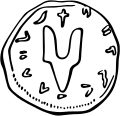
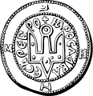
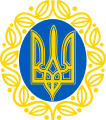
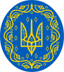
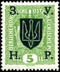

Short definition
The coat of arms of Ukraine is a blue shield with a gold trident. Officially referred
to as the
Emblem of the Royal State of Volodymyr the Great, or, colloquially, the tryzub (Ukrainian:
тризуб), the insignia derives from the seal-trident of Volodymyr the Great, the first Grand Prince
of Kyiv.
The small coat of arms was officially adopted on 19 February 1992, while constitutional
provisions exist for establishing the great coat of arms, which is not yet officially adopted. The
small coat
of arms was designed by Andriy Grechylo, Oleksii Kokhan, and Ivan Turetskyi. It appears on the
Presidential Standard of Ukraine. Blue-coloured tridents are considered to be an irregular
representation by the Ukrainian Heraldry Society. The greater coat of arms which has not been
adopted consists of the small coat of arms and the coat of arms of Zaporizhian Host (Constitution of
Ukraine, Article 20).
The trident was not thought of as a national symbol until 1917, when one
of the most prominent Ukrainian historians, Mykhailo Hrushevskyi, proposed to adopt it as a national
symbol (alongside
other variants, including an arbalest, a bow or a cossack carrying a musket, i.e. images that
carried considerable historical and cultural and heraldic significance for Ukraine). On 25 February
1918, the Central Rada (parliament) adopted it as the coat of arms of the short-lived Ukrainian
People's Republic.
Of significance, the design of the ТРИЗУБ was deliberate and contains the
letters В-О-Л-Я which means "WILL or DETERMINATION" (for freedom and independence, or
self-determination), and is reminiscent of the Cossack spirit (ДУХ КОЗАЦТВА), as captured by the
artist Ilya Repin, in his painting Reply of the Zaporozhian Cossacks.
During the Soviet period
of 1919–1991 and independence between 1991 and 1992, the state symbols were
consistent with the Russian SFSR and the Soviet Union – a hammer and sickle over the rising sun.

Tryzub
The modern "trident" symbol was adopted as the coat of arms of the Ukrainian People's Republic in
February 1918, designed by Vasyl Krychevsky. The design has precedents in seals of the Kyivan Rus.
The first known archaeological and historical evidence of this symbol can be found on the seals of
the Rurik dynasty. However, according to Pritsak, the stylized trident tamga, or seal which was used
by Rus rulers such as Sviatoslav I of Kiev and similar tamgas that were found in ruins are Khazar in
origin.
It was stamped on the gold and silver coins issued by Prince Volodymyr the Great
(980–1015), who might have inherited the symbol from his ancestors (such as Svyatoslav I Igorevich)
as a dynastic
coat of arms, and he passed it on to his sons, Svyatopolk I (1015–19) and Yaroslav the Wise
(1019–54). The symbol was also found on the bricks of the Church of the Tithes in Kyiv, the tiles of
the Dormition Cathedral in Volodymyr, and the stones of other churches, castles, and palaces. There
are many examples of it used on ceramics, weapons, rings, medallions, seals, and manuscripts.
-
- The seal of Sviatoslav the Brave
- 945y.
- 
-
- Coin of Volodymyr the Great
- 980y.

-
- Coin of Yaroslav the Wise
- 1019y.
- 
-
- The coat of arms of the Ukrainian People's Republic
- 1918y.
- 
-
- The Greater coat of arms of the Ukrainian People's Republic
- 1918y.
- 
-
- The Ukrainian trident overprint of May 1919 on a five-heller stamp of Austria-Hungary
- 1919y.
- 
Most historians agree that the medieval symbol was not intended as depicting a trident, but rather,
was a symbol of the Holy Trinity; it also was most likely a stylized falcon. Depictions of a flying
falcon with a Christian cross above its head have been found in Old Ladoga, the first seat of the
Kievan Rurik dynasty, of Scandinavian lineage. Such a falcon, along with a cross are also
featured on the coins of Olaf Guthfrithsson, a Viking king of Dublin and Northumbria.
Falconry
has been a royal sport in Europe for centuries. The gyrfalcon (known also as Norwegian falcon) was
considered a royal bird and is mentioned (ukr.: рарог) in one of the earliest epics of Ruthenia, the
12th century poem The Tale of Ihor's Campaign.
Later images of the trident ("tryzub") among the
Rurikids resemble more a bident or the letter "У", which also in the modern Cyrillic alphabet
denotes the sound "u" as in "Ukraine" (though the Cyrillic alphabet at the time did not use this
letter individually, using the digraph ОѴ/оу or its monogram Ꙋ instead).
Other uses
The Tryzub is heavily used in the military heraldry to commemorate the participation on the Eastern Front during World War II. At least 36 units of the Italian Army carry the Tryzub in their Coat of Arms, as they were awarded a Medal for Military Valor during their service on the territory of Ukraine. The Tryzyb is the Coat of arms of Zaslawye. Worth noting is that the Tryzub was also used in conjunction with the Russian tricolour, as the symbol of the anti-communist movement National Alliance of Russian Solidarists in the early 20th century.
Three-fingers salute
A three-fingered hand salute is sometimes used to mimic the Tryzub; as for example in pro-independence demonstrations in the late 1980s and in the logo of the (Ukrainian) Svoboda party.